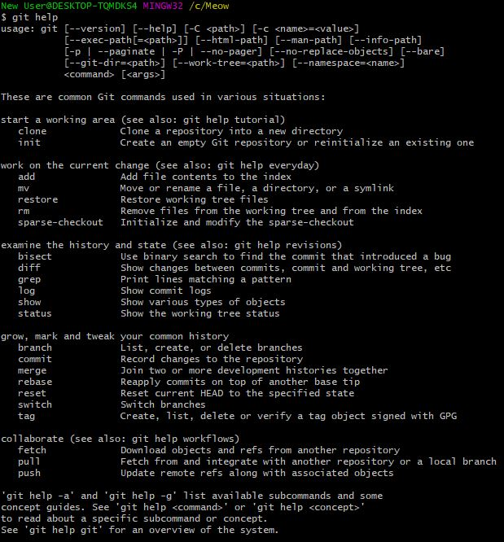

To create a file using Git Bash I used the command 'touch' followed by the name of the file I wanted to create. For instance, I created a file called kitty.txt by first creating a directory by entering the command 'mkdir Meow' and then creating the file by typing 'touch kitty.txt'. I then added some text to this file by entering the command 'echo "Hello Kitty!" > kitty.txt'. To view the file had been created, I entered the command 'ls' and I saw that it had been created on my computer. I opened it by entering the command 'start kitty.txt'.
